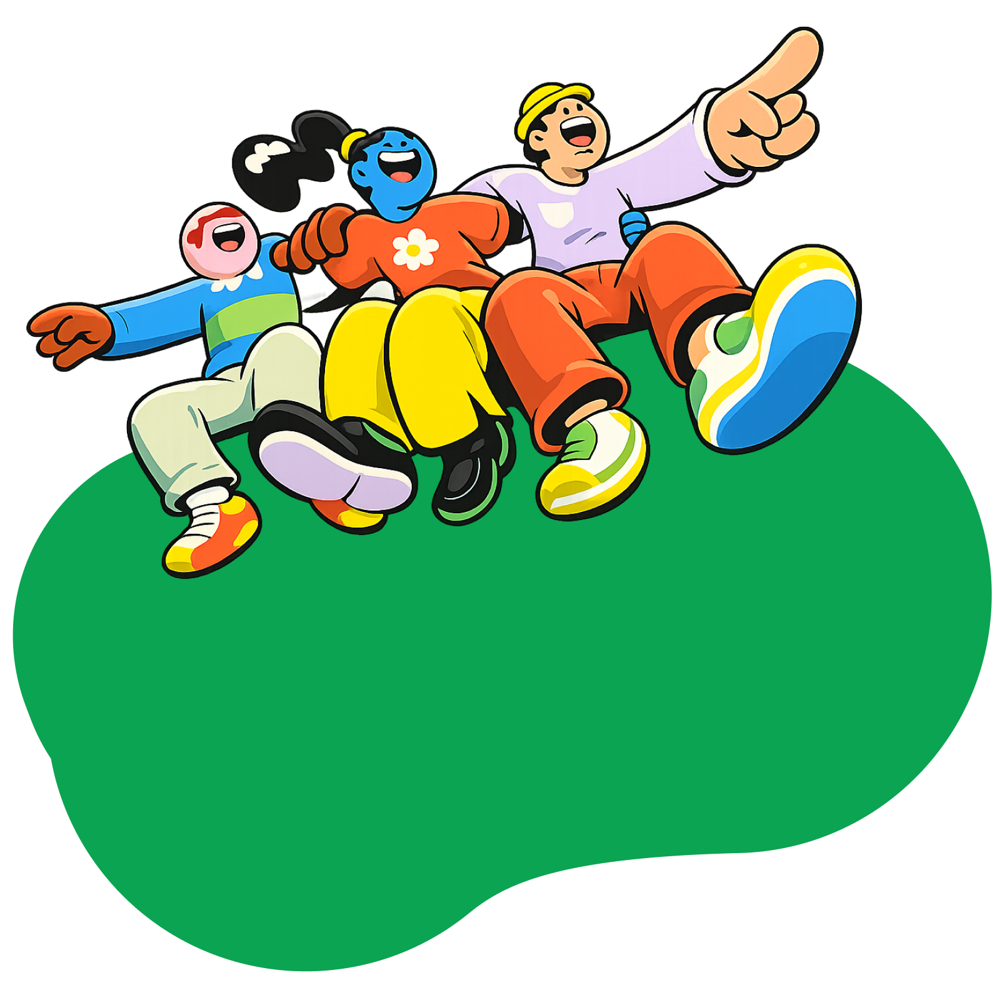
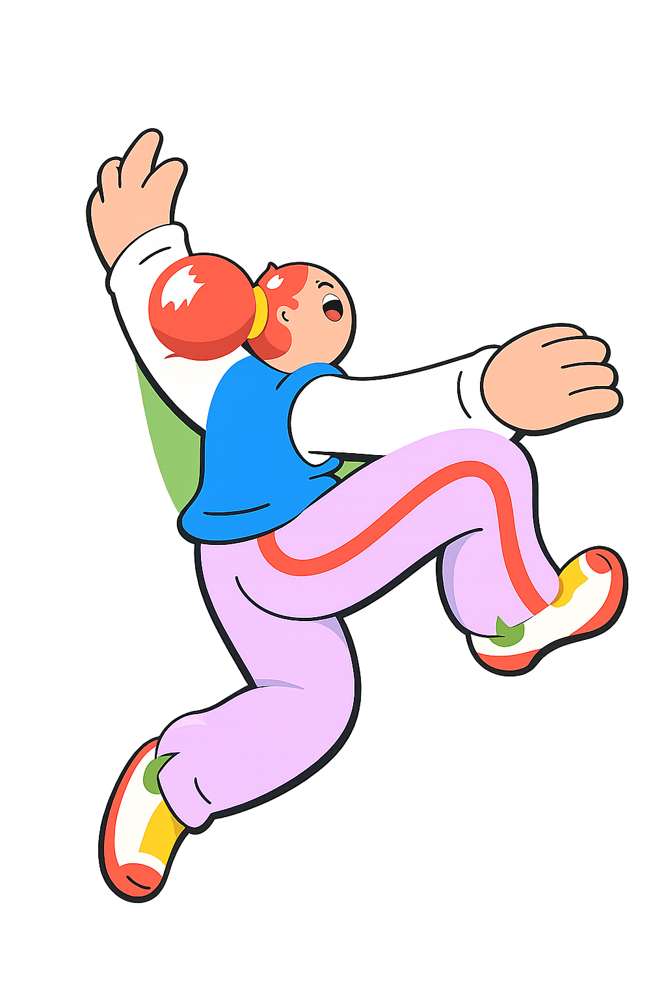
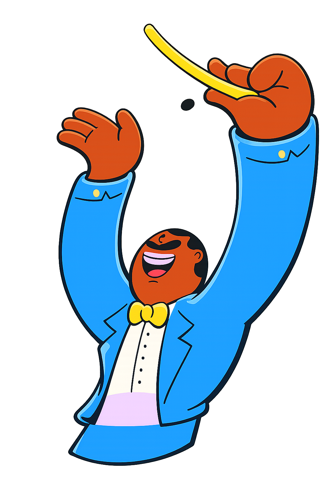
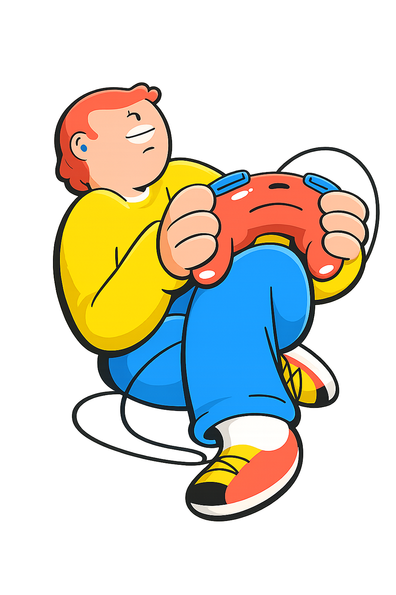
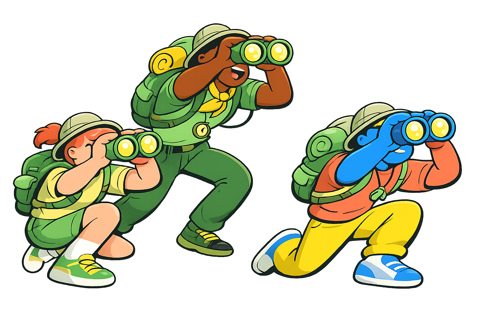

Приложение «УБЕРУ»
Для тех, кто хочет сделать мир чище
Много героев без плащей — Одно приложение


С его помощью вы сможете:
- Легко находить пункты раздельного сбора (точки приема вторсырья) на карте
- Узнать, как правильно сортировать отходы, чтобы переработка была эффективной
- Понять, какой вклад вы можете внести в сохранение окружающей среды
С «Уберу» вы можете повлиять на окружающий мир
Приложение поможет вам стать частью глобального движения за чистоту и устойчивость. Загрязненные места отмечены на карте, и вы можете присоединиться к сообществу, чтобы вместе с другими пользователями очищать эти места от мусора. Вы сможете видеть, какие участки уже очищены, и какие еще нуждаются в помощи. Это не только поможет улучшить окружающую среду, но и создаст чувство общности и взаимопомощи среди пользователей.


Улучшайте мир играючи
В награду за уборку мусора и участие в экологических акциях вы будете получать очки и достижения. За очки вы сможете получить промокоды и скидки от партнеров, а также участвовать в розыгрышах призов и приобрести мерч. Это не только мотивирует вас продолжать делать добрые дела, но и делает процесс уборки более увлекательным и социальным.
